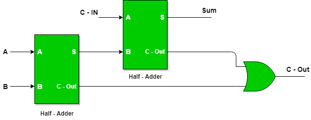
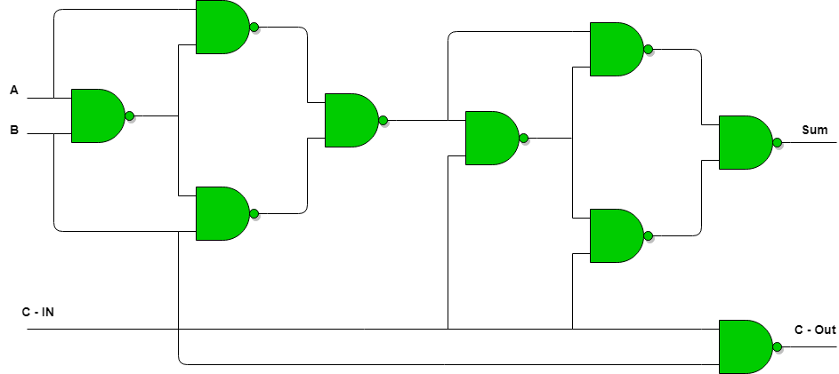
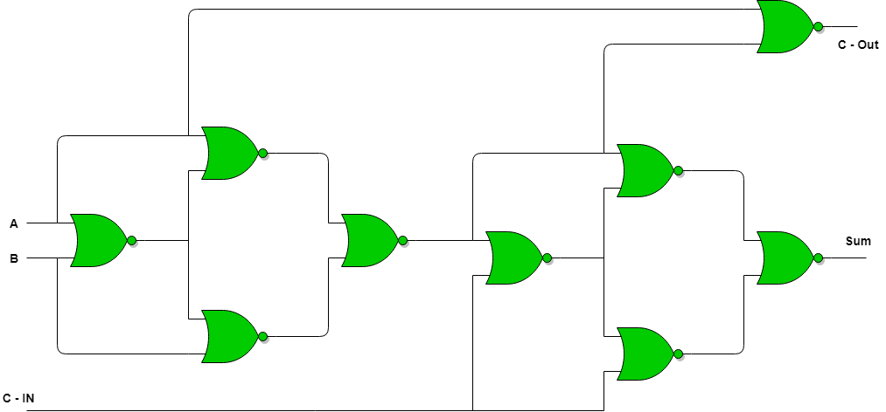

Full Adder is the adder which adds three inputs and produces two outputs. The first two inputs are A and B and the third input is an input carry as C-IN. The output carry is designated as C-OUT and the normal output is designated as S which is SUM.
A full adder logic is designed in such a manner that can take eight inputs together to create a byte-wide adder and cascade the carry bit from one adder to the another.

Full Adder Truth Table:

Logical Expression for SUM:
= A’ B’ C-IN + A’ B C-IN’ + A B’ C-IN’ + A B C-IN
= C-IN (A’ B’ + A B) + C-IN’ (A’ B + A B’)
= C-IN XOR (A XOR B)
= (1,2,4,7)
Logical Expression for C-OUT:
= A’ B C-IN + A B’ C-IN + A B C-IN’ + A B C-IN
= A B + B C-IN + A C-IN
= (3,5,6,7)
Another form in which C-OUT can be implemented:
= A B + A C-IN + B C-IN (A + A’)
= A B C-IN + A B + A C-IN + A’ B C-IN
= A B (1 +C-IN) + A C-IN + A’ B C-IN
= A B + A C-IN + A’ B C-IN
= A B + A C-IN (B + B’) + A’ B C-IN
= A B C-IN + A B + A B’ C-IN + A’ B C-IN
= A B (C-IN + 1) + A B’ C-IN + A’ B C-IN
= A B + A B’ C-IN + A’ B C-IN
= AB + C-IN (A’ B + A B’)
Therefore COUT = AB + C-IN (A EX – OR B)

Full Adder logic circuit.
Implementation of Full Adder using Half Adders
2 Half Adders and a OR gate is required to implement a Full Adder.

With this logic circuit, two bits can be added together, taking a carry from the next lower order of magnitude, and sending a carry to the next higher order of magnitude.
Implementation of Full Adder using NAND gates:

Implementation of Full Adder using NOR gates:
Total 9 NOR gates are required to implement a Full Adder.
